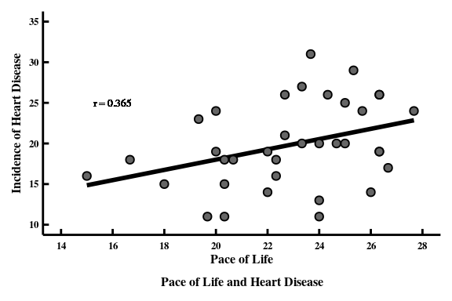

3.2 رابطه بین ریتم زندگی و بیماری قلبی
مثال 3.2 در شکل 3.2 رابطه بین ریتم زندگی و بیماری قلبی. رسم شده است.
نمایش کد
- فراخوانی کتابخانههای مورد نیاز
library(tidyverse)
library(patchwork)
library(ggrepel)- وارد کردن دادهها از فایل به محیط کاری R
pace_heart <- read_table("./data/tab/Tab9-1.dat")تعریف متغییرهای \(X\) و \(Y\)
تعریف مختصات و برچسبهای محورها و عنوان نمودارها
p <-
pace_heart |>
ggplot() + aes(x = Pace, y = Heart) +
scale_x_continuous(limits = c(14, 28), breaks = seq(14, 28, 2)) +
scale_y_continuous(limits = c(10, 35), breaks = seq(10, 35, 5)) +
labs(
x = "Pace of Life",
y = "Incidence of Heart Disease",
caption = "Pace of Life and Heart Disease"
)- محاسبه هم بستگی بین متغییرها و نشان دادن آن روی نمودار
p <-
p +
geom_text(x = 16, y = 25, size = 5/.pt, family = "serif",
label = "r = %0.3f" |> sprintf(cor(pace_heart$Pace, pace_heart$Heart))
)- ترکیب سه نمودار و مشخص کردن نوع نمودار و تنظیم قالب نهایی
p <-
p +
geom_smooth(se = FALSE, method = "lm", formula = "y ~ x", color = "black") +
geom_point(shape = 21, color = "black", fill = "grey40") +
theme_classic(base_family = "serif") +
theme(
title = element_text(size = 6),
text = element_text(size = 6, face = "bold", color="black"),
axis.text=element_text(color="black"),
axis.text.x=element_text(vjust=-0.25),
axis.text.y=element_text(hjust=1),
axis.ticks=element_line(color="black", size=0.5),
axis.ticks.length=unit(-1, "mm"),
plot.caption=element_text(hjust=0.5, size = 6),
plot.background = element_blank()
)

شکل 3.2: رابطه بین ریتم زندگی و نرخ سن تعدیل شده بیماری قلبی
یک باور بین مردم وجود دارد ریتم زندگی سریع باعث بروز بیماریهای قلبی کشنده میشوند.
لوین (Levine 1990) دادههای سرعت زندگی و نرخ مرگ و میر تعدیل شده با سن ناشی از بیماری ایسکمیک قلبی را منتشر کرد.
نکته. چگونگی اندازهگیری سرعت ریتم زندگی افراد در شهرهای مختلف ایدهی خلاقانه لوین بود.
تعریف 3.3 محاسبه کوواریانس
نمایش کد
- نمایش جدول دادهها
t <- pace_heart |> psych::headTail()| Pace | Heart |
|---|---|
| 27.67 | 24 |
| 25.33 | 29 |
| 23.67 | 31 |
| 26.33 | 26 |
| … | … |
| 20 | 19 |
| 18 | 15 |
| 16.67 | 18 |
| 15 | 16 |
محاسبه کوواریانس
نمایش کد
sum_X <- sum(X)
sum_Y <- sum(Y)
sum_X2 <- sum(X^2) |> round(2)
sum_Y2 <- sum(Y^2) |> round(2)
X_bar <- mean(X) |> round(2)
Y_bar <- mean(Y) |> round(2)
s_X <- sd(X) |> round(2)
s_Y <- sd(Y) |> round(2)
N <- length(X)
sum_XY <- sum(X*Y)
cov_XY <- cov(X, Y) |> round(2)منابع
Levine, Robert V. 1990. “The Pace of Life.” American Scientist 78 (5): 450–59.